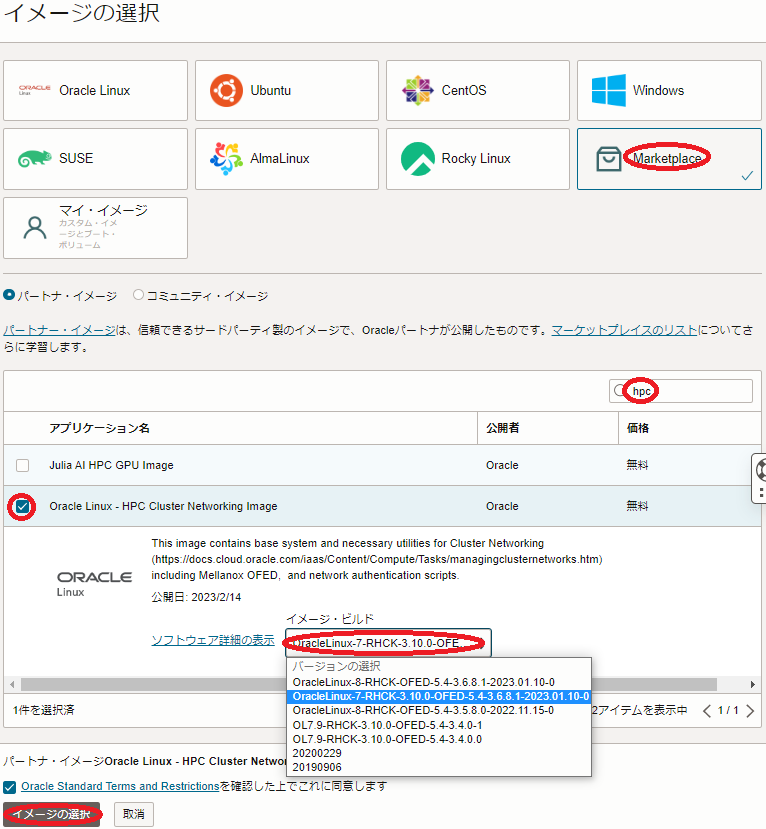
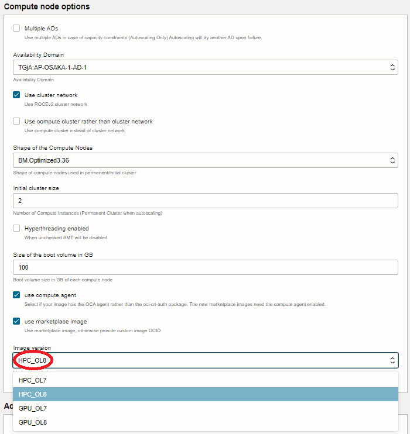

クラスタ・ネットワーク を使用するインスタンスは、接続に必要なソフトウェアがインストールされている必要がありますが、これらを含んだOSイメージが マーケットプレイス から提供されています。
本テクニカルTipsは、このOSイメージの適切な選び方を解説します。
0. 概要
マーケットプレイス から提供される クラスタ・ネットワーク 対応OSイメージは、ベースOSにOracle Linuxを採用し、シェイプがBM.HPC2.36/ BM.Optimized3.36 の場合そのバージョンは7.9と8.6から選択でき、 BM.GPU4.8/BM.GPU.GM4.8 の場合7.9のみ選択可能です。
下表は、クラスタ・ネットワークに対応したシェイプと対応するOSイメージの組み合わせを示しています。
| シェイプ | OSイメージ名 | ベースOS | マーケットプレイスURL |
|---|---|---|---|
| BM.HPC2.36 | HPC Cluster Networking Image | Oracle Linux 7.9 | Link |
| HPC Cluster Networking Image | Oracle Linux 8.6 | Link | |
| BM.Optimized3.36 | HPC Cluster Networking Image | Oracle Linux 7.9 | Link |
| HPC Cluster Networking Image | Oracle Linux 8.6 | Link | |
| BM.GPU4.8 | GPU Cluster Networking Image | Oracle Linux 7.9 | Link |
| BM.GPU.GM4.8 | GPU Cluster Networking Image | Oracle Linux 7.9 | Link |
1. クラスタ・ネットワーク対応OSイメージ指定方法
1-0. 概要
クラスタ・ネットワーク に接続するインスタンスのデプロイは、OCIコンソールを使用する方法と HPCクラスタスタック を使用する方法があります。
本章は、これらの方法でクラスタ・ネットワーク対応OSイメージを適切に指定する方法を解説します。
1-1. OCIコンソールで指定
OCIコンソールを使用して クラスタ・ネットワーク に接続するインスタンスをデプロイする場合、 インスタンス構成 を予め作成しますが、このインスタンス構成の イメージとシェイプ フィールドでクラスタ・ネットワーク対応OSイメージを選択します。
以下 イメージの選択 サイドバーで Marketplace を選択し検索フィールドに hpc （HPC Cluster Networking Image）か GPU （GPU Cluster Networking Image）と入力して表示される Oracle Linux - HPC Cluster Networking Image あるいは Oracle Linux - GPU Cluster Networking Image を選択し イメージ・ビルド フィールドで適切なOSイメージを選択し イメージの選択 ボタンをクリック）します。

1-2. HPCクラスタスタックで指定
HPCクラスタスタック を使用して クラスタ・ネットワーク に接続するインスタンスをデプロイする場合、 スタック メニュー中の以下 Compute node options フィールドの Image version プルダウンメニューでクラスタ・ネットワーク対応OSイメージを選択します。

各選択肢は、以下のクラスタ・ネットワーク対応OSイメージに対応しています。
| メニュー名 | クラスタ・ネットワーク対応OSイメージ |
|---|---|
| HPC_OL7 | HPC Cluster Networking Image Oracle Linux 7.9 |
| HPC_OL8 | HPC Cluster Networking Image Oracle Linux 8.6 |
| GPU | GPU Cluster Networking Image Oracle Linux 7.9 |